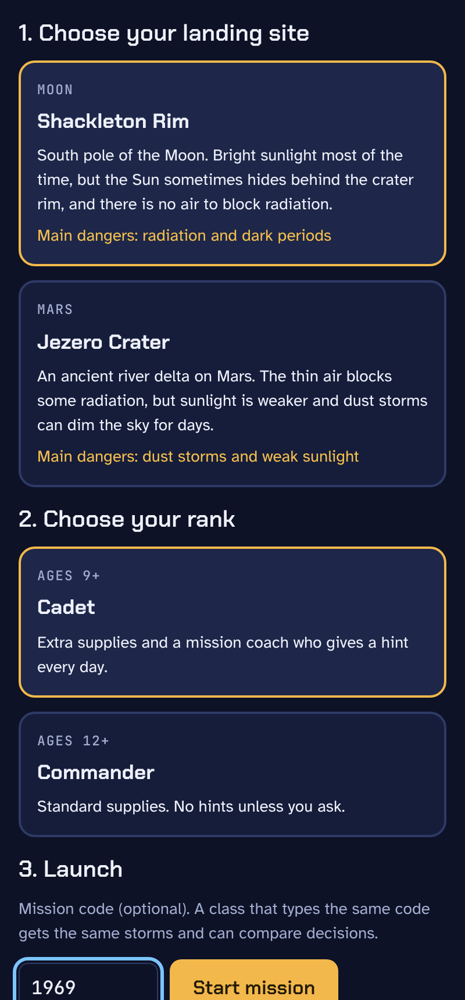
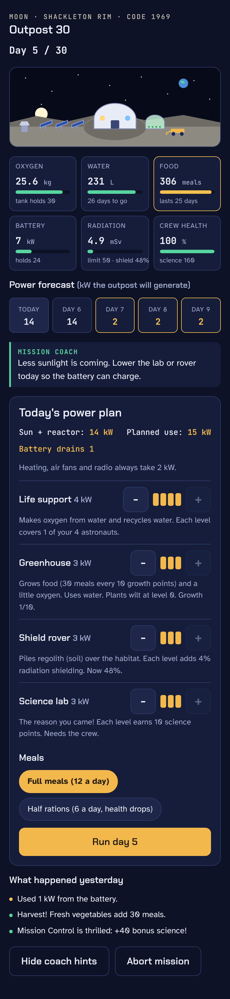
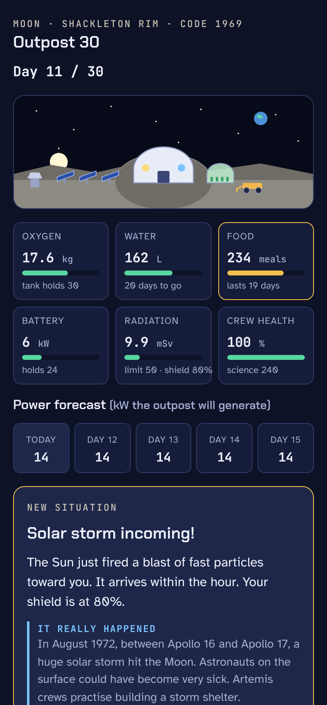
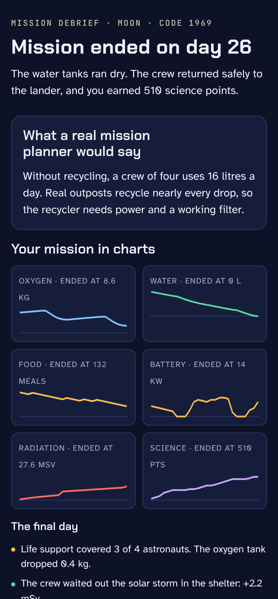

Four astronauts. Thirty days. One power budget.
A browser game where students run a Moon or Mars outpost and feel the trade-offs that decide a mission.
Team Carpathian Cosmos

1 / 7Most space content for young learners either hides the engineering trade-offs or buries them in complexity.
Real missions are decided by a question a child can understand: there is not enough power for everything, so what do you switch off?
A full mission takes about ten minutes on a phone, tablet or laptop. No install, no account.

3 / 7Solar storms, air leaks, dusty panels, a clogged water filter and requests from Mission Control interrupt the plan.
Every event card carries an “It really happened” note: the 1972 solar storm between Apollo 16 and 17, the dust storm that ended Opportunity, the dust that silenced InSight.
The Moon punishes late shielding. Mars punishes an empty battery in a dust storm.

4 / 7| Quantity | In the game | Source |
|---|---|---|
| Oxygen per astronaut | 0.84 kg / day | NASA ECLSS |
| Water recycling | 98% | NASA, ISS milestone 2023 |
| Radiation, Mars surface | 0.67 mSv / day | NASA Curiosity RAD |
| Radiation, Moon surface | 1.37 mSv / day | Chang'e 4 LND, Zhang et al. 2020 |
| Dust storm power loss | down to 20% | 2018 global storm, Opportunity |
Simplified on purpose: whole-kilowatt power blocks, a very productive greenhouse, storm doses tuned for a 30-day game. All listed in the README.
Mission codes: a 4-digit code replays the same storms, so a whole class can fly the same mission and compare decisions.

6 / 7Outpost 30 is a student project and is not endorsed by NASA.